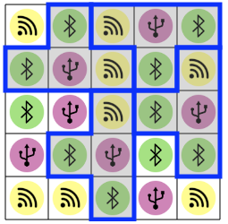

الأنماط المتكررة
ضع الـ أشكال الرمادية المحددة باللون الأزرق على المربعات
بحيث يكون محتوى جميع الأشكال متطابق
يمكنك تغيير وضعية الأشكال في كل خطوة بالضعط على الزر المربع بالأسفل
ضع الـ أشكال الرمادية المحددة باللون الأزرق على المربعات
بحيث يكون محتوى جميع الأشكال متطابق
يمكنك تغيير وضعية الأشكال في كل خطوة بالضعط على الزر المربع بالأسفل
يمكننا استخدام مزيج من طريقتين مختلفتين لحل هذه المشكلة:
تتمثل الطريقة الأولى، سريعة في هذا الإصدار من الموضوع، في محاولة وضع الشكل على المواضع الأولى بدءًا من اليسار، ومعرفة الموضع الذي يتكرر فيه النمط والذي يتكرر 3 مرات أخرى.

الطريقة الثانية تتمثل في ملاحظة ان الشكل الأصفر يتكرر علي الأقل أربع مرات في الخط السفلي. علي سبيل المثال، الشكل الأصفر تكرر هنا 6 مرات. يوجد أثنين منهم يعتليهم شكل أخصر، وأربع مرات يعتليهم شكل بنفسجي. ولذلك يجب علينا وضع الأشكال الرمادية علي الأشكال الصفراء اللتي تعتليها أشكال بنفسجية
سيغطي المربعان السفليان من كل شكل المربعات في المنطقة المحددة باللون الأحمر أدناه.

في هذه المنطقة، فقط الزوج "الرمز الأصفر متبوعًا بالرمز البنفسجي" يظهر أكثر من 5 مرات. وهذا هو عدد مرات ظهور كل زوج من الرموز في المنطقة الحمراء.

بمجرد تحديد أن الرموز الموجودة في المربعين السفليين من الشكل الرمادي هما الرموز صفراء والبنفسيجية، يمكننا بسهولة وضع الأشكال في الشبكة.

يجب أن يحتوي الشكل الرمادي على 4 رموز بين الرموز الثلاثة: الأصفر والأخضر والبنفسجي. لذلك بالضرورة يجب أن يظهر أحد الرموز مرتين في كل نموذج أزرق. يمكن أن يكون هذا الرمز هو الرمز الأخضر فقط ، لأنه الرمز الوحيد الذي يظهر 10 مرات (هناك 10 أخضر و 7 بنفسجي و 8 أصفر).
يمكننا بعد ذلك أن نتساءل عن الرمز الذي سيظهر في المربع الأوسط للشكل الرمادي.
باختصار، يجب أن يكون لكل شكل رمادي رمز بنفسجي في الموضع المركزي، ورمز أصفر ورمزين باللون الأخضر.
إذا كنت غير محظوظًا، فيمكنك البدء بوضع الشكل الرمادي، والتوقف فورًا لأنه لا يوجد مكان آخر لوضع شكل آخر مماثل.

إذا كنت لا تزال غير محظوظ، فيمكنك وضع شكل (الشكل في أسفل اليسار) والذي يحل محل اثنين آخرين.
بمحاولة تنظيم الأشكال الخمسة جيدًا، نحصل على الحل.

في علوم الكمبيوتر كما في هذه اللعبة الصغيرة ، من المفيد للغاية استخدام القيود ، أي تحديد الخصائص التي يجب احترامها بالضرورة ، من أجل تقليل مساحة الاحتمالات ليتم اختبارها قبل الوصول إلى حل.